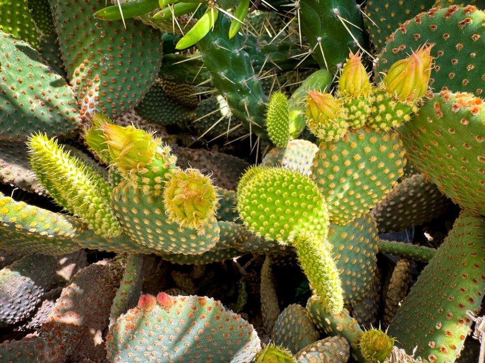
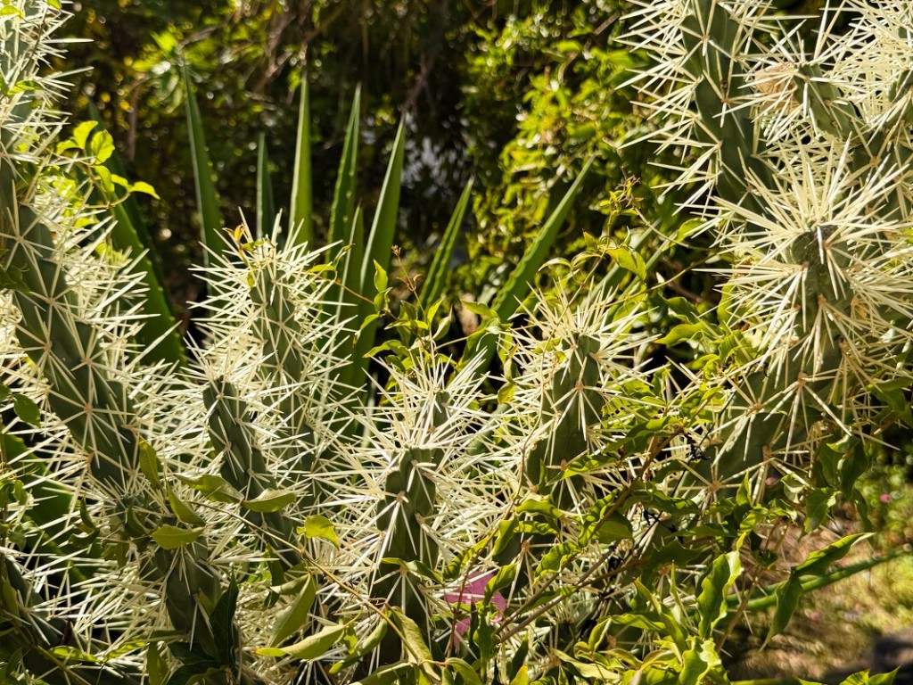
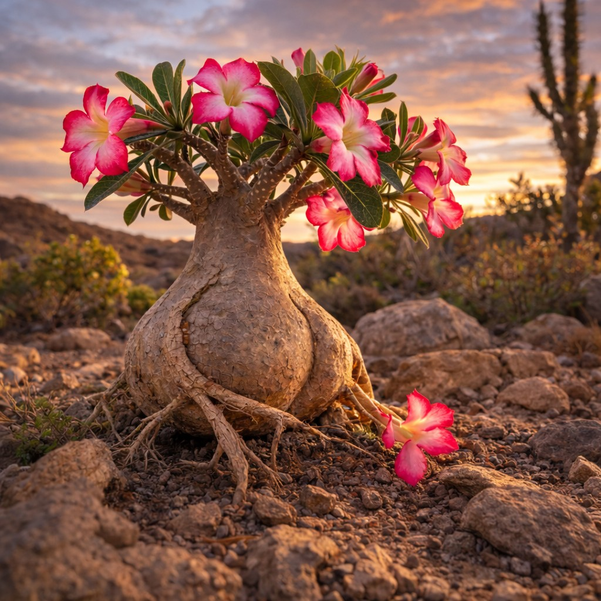
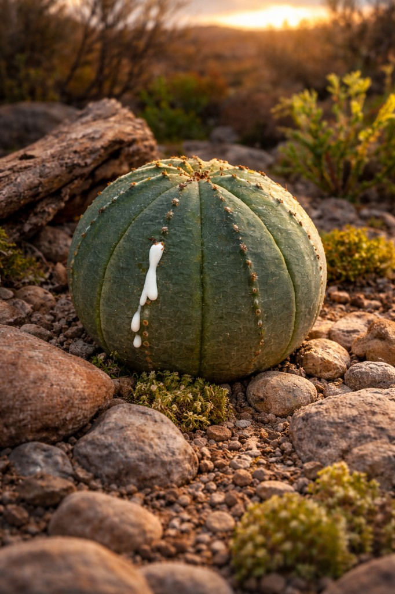

Колючки с зазубринами — как гарпун, вырывает с мясом
У опунций и цилиндропунций (чойя) идёт обычная колючка, но на самой колючке — мелкие зазубрины, как у гарпуна. В палец входит легко, а при выдёргивании вырывает с мясом: сидят очень крепко. Вытаскивать только плоскогубцами: взять и резко выдернуть. Возможно, сейчас есть и другие методы — но я, автор сайта, всегда так делал. Бывает, что колючка впилась кошке или собаке (в нос, лапу): животное терпит, но вытаскивать всё равно нужно — иначе нагноение. Один раз моему коту такие колючки впились в нос; пришлось держать и выдёргивать плоскогубцами — котик сидел терпеливо, но это было неприятно и для него, и для меня. С такими кактусами работать в перчатках и не ставить их там, где до них легко дотянется ребёнок или питомец.
Виды с особенно «злыми» такими колючками — как пишет автор сайта от своего опыта: опунция туниката (Cylindropuntia tunicata), многие чойи (цилиндропунции). При пересадке и уходе — максимум осторожности.
Глохидии: мельчайшие шипы, как стекловата
Глохидии — это крошечные, почти невидимые колючки на ареолах опунций. На ощупь — как стекловата: впиваются в кожу десятками, болят, чешутся, плохо вытаскиваются. Выглядят при этом безобидно и даже мило: опунция микродазис (Opuntia microdasys), например, усеяна такими мелкими пучками — кажется бархатной, «пушистой». На самом деле трогать её голыми руками нельзя: глохидии останутся в пальцах и будут долго напоминать о себе.
Что делать, если набил глохидии: не тереть, не чесать. Можно аккуратно снять часть липкой лентой (скотч, пластырь) или пинцетом под лупой; мелкие лучше размочить тёплой водой с мылом и потихоньку счищать. В тяжёлых случаях — к врачу.
Плоды опунции: перед едой — обязательно чистить
Плоды опунции (туны, «колючие груши») вкусные и полезные, но на кожуре и в ней сидят глохидии. Если есть неочищенными — они попадут в губы, язык, руки. Перед едой плоды надо тщательно очистить: срезать концы, надрезать кожуру вдоль и снять её (в перчатках или под струёй воды, чтобы смыть обломки). Либо покупать уже очищенные. То же касается нопалеса (молодых кладодий опунции), если готовите сами — убрать ареолы с глохидиями.
Ядовитые: молочаи и другие суккуленты
У многих молочаев (эуфорбий) при надрезе выделяется млечный сок — он ядовит, раздражает кожу и слизистые. В глаза не попадать, в рот не брать; после контакта мыть руки. Держать молочаи подальше от детей и животных. Другие суккуленты (например адениум) тоже могут быть токсичны — перед покупкой стоит уточнить. Кактусы в целом не ядовиты, но колючки и глохидии — их главная «опасность».
Как выглядят: примеры (фото)
Ниже — растения с колючками или соком, с которыми лучше не контактировать без осторожности. Подписи даны на латинском и по типу опасности.



